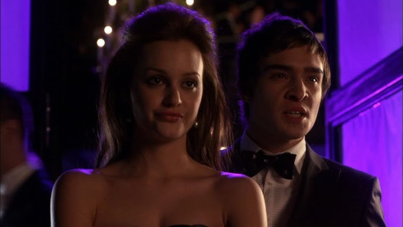
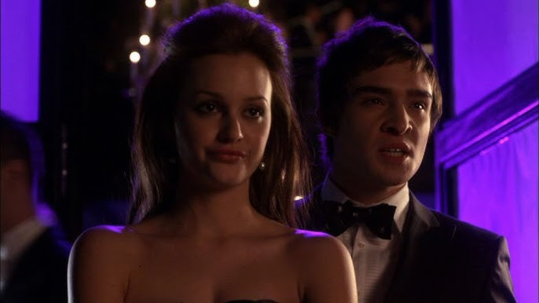
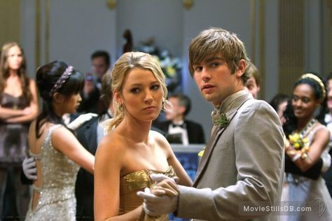
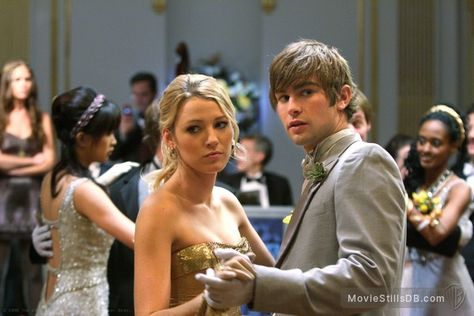
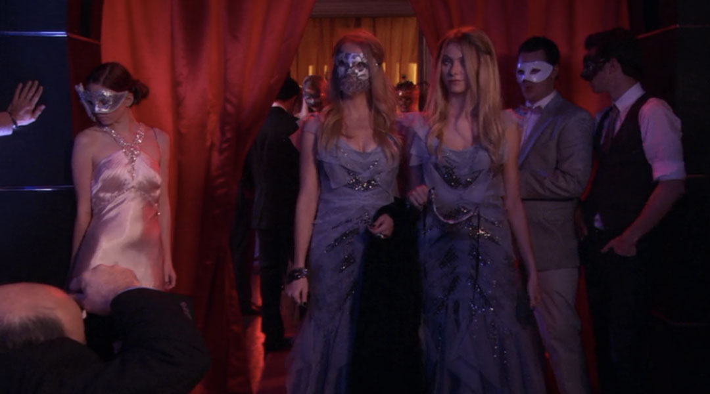
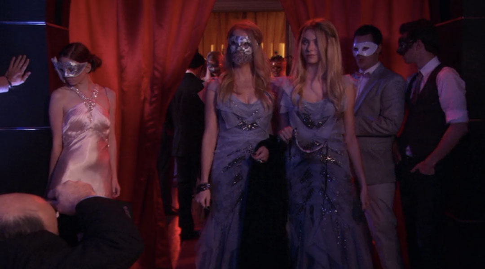
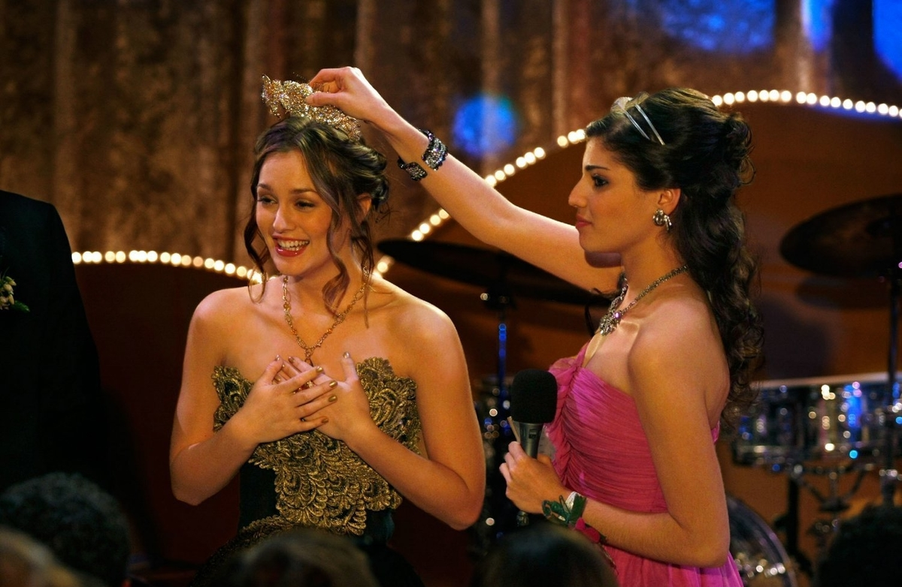
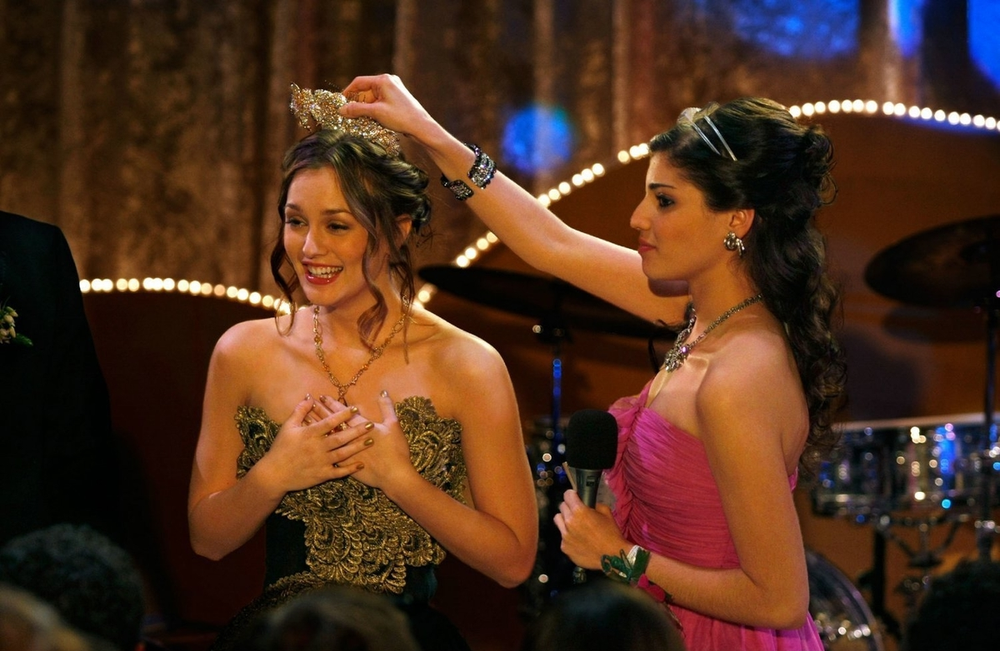
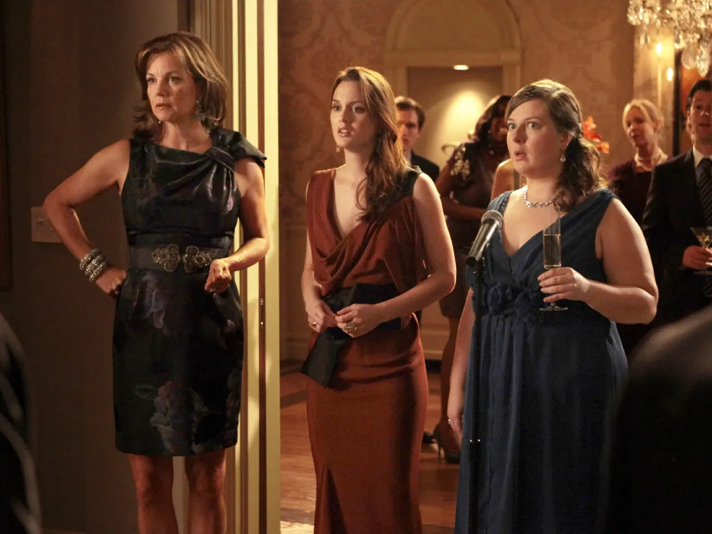
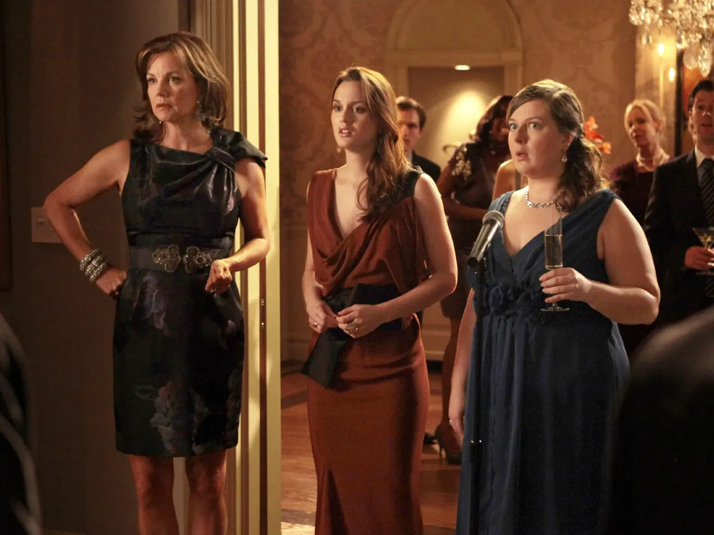

Champagne, Chaos & Confessions
XOXO
Blair’s Kiss On The Lips Party
Location: The Waldorf Residence
Date: September 21, 2007

First party, first scandal — and it wouldn’t be Gossip Girl without one.
Date: September 21, 2007

First party, first scandal — and it wouldn’t be Gossip Girl without one.
XOXO
The Shepherd Divorce Party
Location: The Palace Hotel
Date: October 5, 2007

History repeats itself — and Serena van der Woodsen always makes sure the spotlight follows.
Date: October 5, 2007
History repeats itself — and Serena van der Woodsen always makes sure the spotlight follows.
XOXO
The Masquerade Ball
Location: The Palace Ballroom
Date: October 27, 2007

One thing is certain: not everyone is who they seem tonight. Masks hide faces — but not intentions.
Date: October 27, 2007
One thing is certain: not everyone is who they seem tonight. Masks hide faces — but not intentions.
XOXO
Chuck’s Halloween Party
Location: Victrola Club
Date: October 31, 2007

Only Chuck Bass could turn a missing liquor license into a marketing stunt.
Date: October 31, 2007
Only Chuck Bass could turn a missing liquor license into a marketing stunt.
XOXO
The Debutante Ball
Location: Palace Hotel Ballroom
Date: December 15, 2007

When New York’s finest debut, secrets never stay under wraps for long.
Date: December 15, 2007

When New York’s finest debut, secrets never stay under wraps for long.
XOXO
The White Party
Location: The Hamptons
Date: July 12, 2008

Pure as snow, but twice as cold — especially when Serena’s involved.
Date: July 12, 2008
Pure as snow, but twice as cold — especially when Serena’s involved.
XOXO
Chuck’s Saints & Sinners Party
Location: Empire Hotel
Date: November 8, 2008

Heaven or hell? At Chuck Bass’s party, everyone falls from grace.
Date: November 8, 2008

Heaven or hell? At Chuck Bass’s party, everyone falls from grace.
XOXO
The Snowflake Ball
Location: Waldorf Astoria Ballroom
Date: December 13, 2008

Spotted: Blair Waldorf melting even the iciest of hearts at the Snowflake Ball.
Date: December 13, 2008
Spotted: Blair Waldorf melting even the iciest of hearts at the Snowflake Ball.
XOXO
Prom
Location: Constance Billard–St. Jude’s Ballroom
Date: May 22, 2009

It’s the night every girl dreams of — and Blair Waldorf planned every detail.
Date: May 22, 2009

It’s the night every girl dreams of — and Blair Waldorf planned every detail.
XOXO
Blair’s 20th Birthday
Location: Waldorf Penthouse
Date: November 14, 2011

Twenty candles, one scandal — happy birthday, Queen B.
Date: November 14, 2011

Twenty candles, one scandal — happy birthday, Queen B.